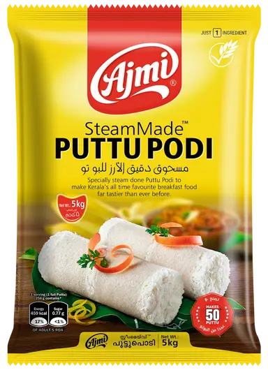

Ajmi Puttu Podi
Ajmi is renowned for its Steam Made Puttu Podi which is the highest selling Puttu Podi in all of Kerala. We are the first in the country to introduce steam made puttu podi in the market. This special technology gives our product its distinct quality characteristics. Our product is most famous for its softness that can’t be beaten by any of the competitors. What makes us stand out is the fact that we procure our raw materials from farms dedicated for producing our highest quality rice. Another specialty of our product that when Puttu is made using our powder user gets 10% more output compared to the other competitive brands.
+91 8593 846975
contact@ajmifoods.com
Ajmi Flour Mills (India) Pvt. Ltd. Ajmi Gardens,
Kalathukadavu P.O. Erattupetta, Kottayam,
Kerala-686 579
Connect
Useful Links
Home
Products
About Us
Recipes
Media
Blog
Careers
Contact Us
Privacy
Terms & Conditions